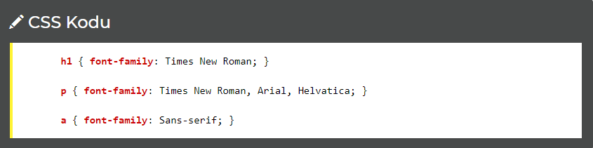
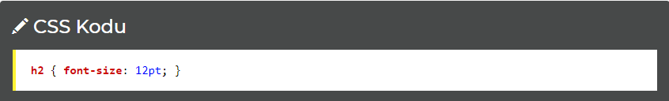
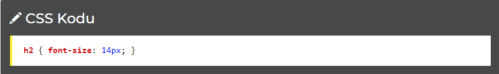
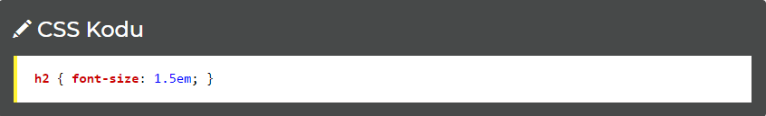
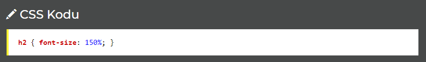
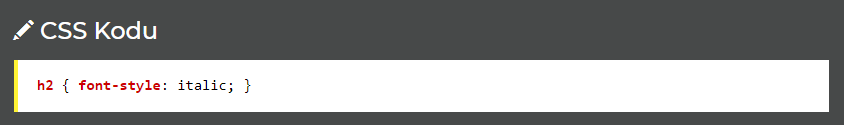
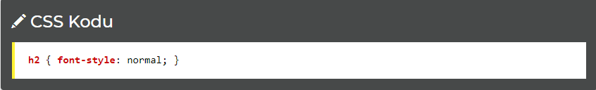
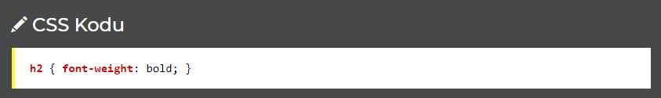
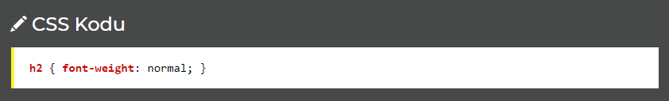

CSS Yazı Tipleri
Bu sayfada HTML sayfanızda kullandığınız yazıların yazı tipi özelliklerini nasıl değiştirebileceğiniz hakkında bilgi verilecektir.
Yazı tiplerini biçimlendirirken en sık kullandığımız komutlar:
font-family
font-size
font-style
font-weight
font-family: Yazı Tipi Belirlemek
Yazı tipleri klasörümüzü açtığımızda birçok yazı tipi görürüz. Bunları HTML sayfamızda kullanmak için adını belirtmemiz gerekir. İşte bu kod yazı tipi seçmemizde bize yardımcı olacaktır.

Yukarıdaki birinci örnekte sadece tek yazı tipi adı belirttik (Times New Roman), ancak bir sonrakinde aralarına virgül koyarak daha fazla belirttik. Bu tarz kullanımlarda öncelikle dikkate alınan ilk verdiğimiz yazı tipi olacaktır. Eğer verdiğimiz yazı tipi o kullanıcıda yoksa bir sonraki ile görüntülenecektir.
font-size: Yazının Büyüklüğü (Puntosu)
Yazı büyüklüğünü font-size ile belirtiriz. Ölçü birimi olarak aşağıdakileri kullanabiliriz:
% : yüzde olarak belirtmek
in : inç olarak belirtmek
cm : santim olarak belirtmek
mm : milimetre olarak belirtmek
em : varsayılan yazı büyüklüğüne göre oranlamak
pt : punto olarak belirtmek
px : piksel olarak belirtmek
Örneğin yazımızın 12 punto olması için yazmamız gereken komut:

14 piksellik bir yüksekliğe sahip yazı istiyorsak:

Varsayılan yazı tipinin %150 fazlasını EM ile belirtirsek:

Yukarıdaki örneği yüzde ile ifade etmek isteseydik:

font-style: İtalik (Sağa Yatık) Yazmak
Yazımızın sağa yatık (italic) olması için aşağıdaki kodu kullanabiliriz.

Eğer italik bir yazıyı iptal edeceksek aşağıdaki kodu yazmalıyız:

font-weight: Kalın Yazmak
Yazımızın kalın (bold) olmasını istiyorsak aşağıdaki kodu kullanmalıyız.

Eğer kalın bir yazıyı normal haline dönüştüreceksek aşağıdaki kodu yazmalıyız:
